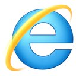

Proxy Scholae
Scholae fournit un accès Internet libre pour tous ses visiteurs. La loi nous
oblige cependant à filtrer cet accès pour garder un suivi complet de toutes les
connexions.
Si vous souhaitez accéder à Internet, il vous suffit d'installer le
certificat SSL de l'entreprise. Cette page contient des instructions pour les
systèmes et les navigateurs web les plus courants.
Sélectionnez votre plateforme en cliquant sur le logo correspondant.

Microsoft Windows
Sélectionnez votre navigateur web dans la liste.

Mozilla Firefox pour Windows
- Téléchargez le certificat.
- Dans la fenêtre de téléchargement, choisissez Enregistrer le
fichier.
- Rangez le fichier dans vos Téléchargements.
- Si vous ne voyez pas la barre de menus de Firefox, faites un clic droit
sur les trois traits horizontaux Ouvrir le menu en haut à
droite de la fenêtre et cochez Barre de menus.
- Ouvrez Outils > Options.
- Cliquez sur l'onglet Vie privée et sécurité et descendez
à la section Certificats.
- Si vous avez une ancienne version de Firefox, la section
Certificats se trouve dans l'onglet
Avancé.
- Cliquez sur Afficher les certificats, puis sur
Importer.
- Importez le certificat téléchargé et cliquez sur Ouvrir.
- Cochez les trois options Confirmer cette AC... et
terminez en cliquant sur OK.
Google Chrome pour Windows
- Téléchargez le certificat.
- Ouvrez le menu principal de Chrome en cliquant sur le bouton
Personnaliser et contrôler Google Chrome symbolisé par trois
petits points verticaux en haut à droite de la fenêtre.
- Allez dans Paramètres.
- Descendez sur la page et cliquez sur Paramètres
avancés.
- Cliquez sur Gérer les certificats.
- Cliquez sur Importer.
- L'Assistant Importation de Certificats se lance. Cliquez sur
Suivant.
- Repérez le champ Nom du fichier et cliquez sur
Parcourir.
- Dans le menu déroulant en bas à droite du sélecteur de fichiers,
choisissez Tous les fichiers (*.*).
- Sélectionnez le certificat
proxy.scholae.lan et cliquez
sur Ouvrir, puis sur Suivant.
- Dans l'option Magasin de certificats, cliquez sur
Parcourir et choisissez Autorités de certification
racines de confiance. Cliquez sur Suivant.
- Cliquez sur Terminer et confirmez l'installation du
certificat.
Internet Explorer pour Windows
- Téléchargez le certificat en effectuant un clic droit sur ce lien et en choisissant
Enregistrer la cible sous... dans le menu contextuel.
- Enregistrez le fichier
proxy.scholae.lan dans vos
Téléchargements.
- Dans le menu d'Internet Explorer en haut à droite de la fenêtre, ouvrez
Outils > Options Internet.
- Dans l'onglet Contenu, cliquez sur le bouton
Certificats.
- Cliquez sur Importer, ce qui lance l'Assistant
Importation de Certificats. Cliquez sur Suivant.
- Repérez le champ Nom du fichier et cliquez sur
Parcourir.
- Dans le menu déroulant en bas à droite du sélecteur de fichiers,
choisissez Tous les fichiers (*.*).
- Sélectionnez le certificat
proxy.scholae.lan et cliquez
sur Ouvrir, puis sur Suivant.
- Dans l'option Magasin de certificats, cliquez sur
Parcourir et choisissez Autorités de certification
racines de confiance. Cliquez sur Suivant.
- Cliquez sur Terminer et confirmez l'installation du
certificat.
Mac OS X
Mac OS X stocke les certificats au niveau du système. On va donc utiliser le
navigateur Safari pour récupérer le certificat. Une fois installé, on pourra
naviguer sur le web avec Safari, Firefox Chrome ou n'importe quel autre
navigateur.
- Téléchargez le certificat.
- Récupérer le fichier
proxy.scholae.lan.der dans les
Téléchargements.
- Double-cliquer sur le certificat téléchargé, ce qui ouvre le
Trousseau d'accès.
- Repérer le certificat dans le Trousseau d'accès et
double-cliquer dessus pour ouvrir les préférences du certificat.
- Déplier la section Se fier.
- Repérer la section Lors de l'utilisation de ce
certificat et sélectionner l'option Toujours
approuver dans le menu déroulant.
- Fermer la fenêtre et fournir le mot de passe du système pour prendre en
compte les modifications.
Linux
Sélectionnez votre navigateur web dans la liste.
Mozilla Firefox pour Linux
- Cliquez ici pour importer le
certificat directement.
- Cochez les trois options Confirmer cette AC... et
terminez en cliquant sur OK.
Google Chrome pour Linux
- Téléchargez le certificat.
- Ouvrez le menu principal de Chrome en cliquant sur le bouton
Personnaliser et contrôler Google Chrome symbolisé par trois
petits points verticaux en haut à droite de la fenêtre.
- Allez dans Paramètres.
- Descendez sur la page et cliquez sur Paramètres
avancés.
- Cliquez sur Gérer les certificats.
- Ouvrez l'onglet Autorités.
- Cliquez sur Importer.
- Importez le fichier
proxy.scholae.lan.der depuis vos
Téléchargements.
- Cochez les trois options Considérer ce certificat comme
fiable... et terminez en cliquant sur OK.
Konqueror pour Linux
- Téléchargez le certificat.
- Enregistrez le fichier
proxy.scholae.lan.der dans vos
Téléchargements.
- Ouvrez Menu KDE > Configuration du
système > Préférences SSL.
- Cliquez sur Ajouter.
- Sélectionnez le certificat
proxy.scholae.lan.der dans
vos Téléchargements.
- Confirmez en cliquant sur Appliquer.
- Le certificat apparaît tout en bas dans la liste, dans les
Certificats ajoutés par l'utilisateur.
Mobiles et tablettes Android
Chrome est le principal navigateur du système Android.
Chrome pour Android
- Récupérez le certificat en
sélectionnant l'option Télécharger le lien.
- Ouvrez le fichier
proxy.scholae.lan.pem.
- Saisissez le mot de passe du système.
- Donnez un nom au certificat, par exemple Proxy.
- Sélectionnez l'option Utilisé pour VPN et applications.
iPhones et iPads
Safari est le principal navigateur du système iOS.
Safari pour iOS
- Démarrez l'installaton du certificat en
cliquant dessus.
- Autorisez l'ouverture des Réglages en cliquant sur
Autoriser.
- Cliquez sur Installer pour installer le certificat.
- Fournissez le mot de passe du système.
- Cliquez encore une fois sur Installer.
- Confirmez par OK.
- Quittez Safari et relancez-le.